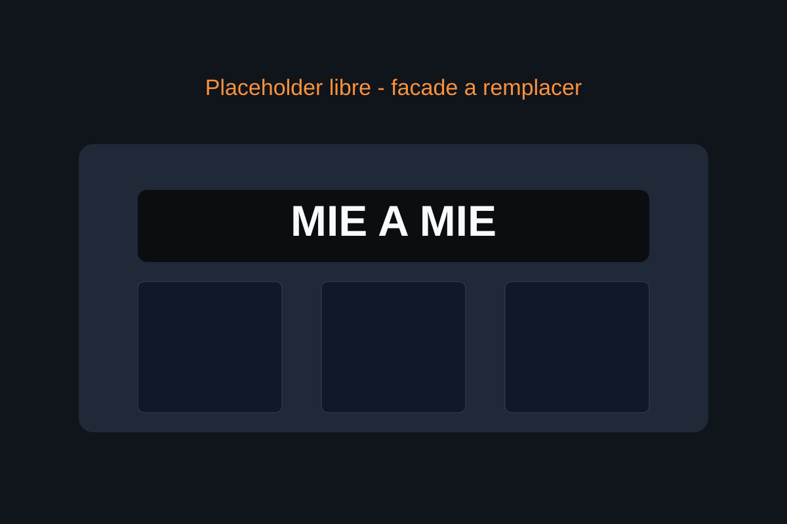
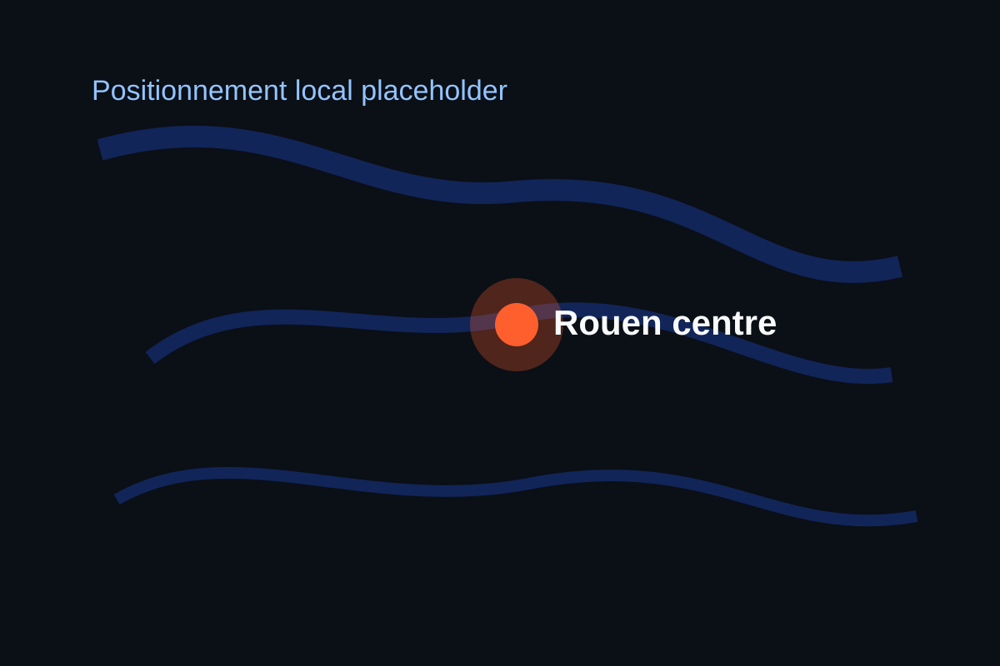

Concept simple
Vous choisissez la base puis vos ingredients pour un repas compose a la carte.
Depuis 2023
Mie a Mie propose une cuisine street-food personnalisable: vous composez votre assiette selon votre faim et vos preferences.

Vous choisissez la base puis vos ingredients pour un repas compose a la carte.
Format pense pour les pauses dej rapides sans sacrifier la personnalisation.
Disponible sur place, a emporter et via plateformes de livraison.
Positionnement local
Situe au 55 rue de l'Hopital, le restaurant est facilement accessible pour les actifs, etudiants et visiteurs du centre-ville.
Horaires officiels de reference (au 19 mars 2026): mardi a samedi, 11h-19h.

Passer commande
Commande immediate par telephone ou livraison via applications.